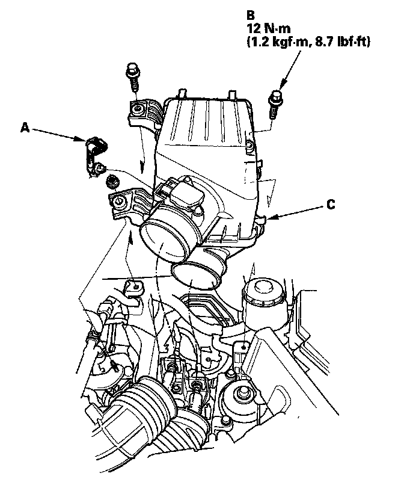

Air Cleaner Housing: Service and Repair
Air Cleaner Removal/Installation1. Disconnect the MAF sensor/IAT sensor connector (A).

2. Remove the bolts (B). then remove the air cleaner (C).
3. Install the parts in the reverse order of removal.